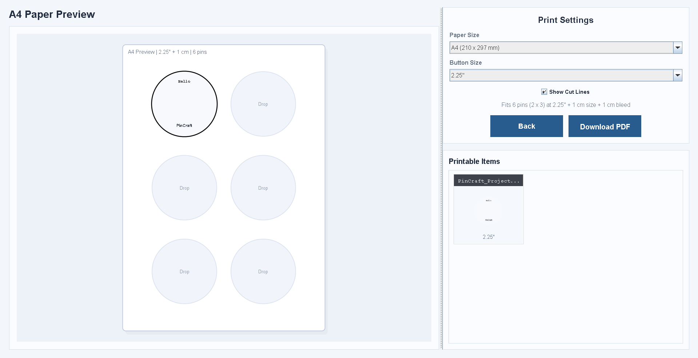

Editor Controls
The Swing editor keeps save, load, upload, real-size, print, and log-out actions pinned to one dark command bar.
Java Swing Desktop Prototype
Pin Button Maker is a modular Swing-only concept app built around CardLayout navigation, shared project state, layer-based editing, print composition, and PDF export through Apache PDFBox.
Built to present the exact Login, Home, Editor, and Print workflow defined in the Java Swing specification.
Editor Controls
The Swing editor keeps save, load, upload, real-size, print, and log-out actions pinned to one dark command bar.
Print Layout

The print page recalculates placement from the selected button size and lets users switch between A4 or Letter before export.
Layer Rules

Layer tabs switch the active target, allow hide or unhide on double-click, and decide what reaches the print gallery.
Features
This page now presents the same behavior described in your prototype brief, from CardLayout navigation and shared state to layer editing, print composition, and PDF export.
Desktop App Features
Each feature block maps directly to the requested Swing-only prototype.LoginPage, HomePage, EditorPage, and PrintPage are framed as one clear desktop flow driven by CardLayout page changes.
The main editor uses a dark software-style shell with a top command bar, centered button canvas, right inspector, and bottom layer tabs.
Text, font, color, rotate, stretch, transparency, and layer visibility update the circular preview in real time.
The photo layer supports upload, crop selection, direct drag movement inside the button preview, and centering controls.
Text edits, slider changes, visibility toggles, image movement, and crop updates are tracked through history.
The print screen filters eligible layers, supports drag and drop placement, and exports a working PDF with PDFBox.
Preview
These panels are now aligned to the real desktop prototype so the website explains the same editor controls, layer behavior, and print composition rules described in the build prompt.
Main Preview
Customization
Fits 6 pins at 2.25" + 1 cm size + 1 cm bleed.
Print Settings
Prototype
This landing page now summarizes the same screens, controls, layer rules, print behavior, and export flow defined in the Java prompt so the visual direction stays aligned before coding.
Static website reference for the desktop build: Login, Home, Editor, Print, and PDF export.
About The App
Pin Button Maker is defined as a modular Java Swing desktop app that uses CardLayout to move between LoginPage, HomePage, EditorPage, and PrintPage while preserving shared project data.
The editor centers a Graphics2D circular preview inside a dark software-style workspace, with text controls, transform sliders, layer tabs, photo upload, drag repositioning, and crop support tied to the active layer.
The print flow imports only eligible visible layers from the editor, lets users place them onto A4 or Letter paper, and exports a real PDF through Apache PDFBox.
Members
This section presents the members responsible for planning, interface design, system behavior, documentation, and final review of the Swing-based academic project.
Member 1
Frontend Developer and UI Designer
Focuses on shaping the visual direction, refining layout decisions, and ensuring the Pin Button Maker presentation feels modern, polished, and accurate to the app flow.
Member 2
Project Coordinator
Supports planning, documentation, and collaboration to keep the team organized and the project direction clear.
Member 3
System Analyst
Helps define system structure, feature flow, and usability goals so the platform stays consistent and understandable.
Member 4
Content and Research Lead
Shapes supporting copy, research references, and content clarity to strengthen the academic and promotional narrative.
Member 5
Quality and Presentation Reviewer
Reviews visual consistency, structure, and final presentation quality to keep the overall output clean and professional.